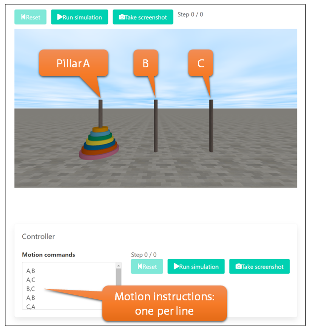

Usage: Run move commands
The Tower of Hanoi consists of three pillars and multiple discs.
The pillars are named A, B, and C from left to right.
Initially, all discs are placed on pillar A.

Move command format
Write one move per line.
Each line specifies how to move the top disc from one pillar to another.
- Format:
A,B (move the top disc from A to B)
- Another example:
B,C
- Uppercase / lowercase letters are both accepted.
- Spaces around letters and commas are allowed.
- Empty or blank lines are not allowed and will result in an error.
- Text after
# is treated as a comment.
- Trailing commas are not allowed (e.g.
A,B, is invalid).
Note: You can also use 1,2,3 instead of A,B,C.
This is optional; using A,B,C is recommended for clarity.
Running the simulation
-
Click Run Simulation to start the simulation.
If an error is found, the button turns red and shows
Move until error.
-
Click Move until error to run the simulation
up to the point where the error occurs.
The error line and its type are displayed.
-
You can also start or pause the simulation by clicking
directly on the Tower of Hanoi screen.
-
When the simulation is paused, click
Take screenshot to save the current view.
The text area initially contains a small example (3 discs) for demonstration.
Replace it with the output generated by your own program.
Settings
The simulator provides a Settings menu (top right) where you can adjust:
- the number of discs (default: 7)
- the screen theme (light / dark / system)
- the display language (English / Japanese)
Please follow your instructor’s instructions when changing these settings.